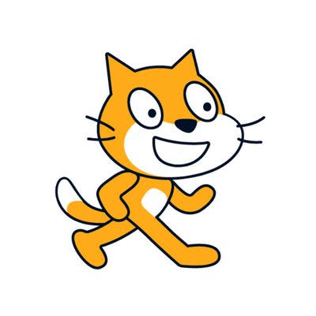
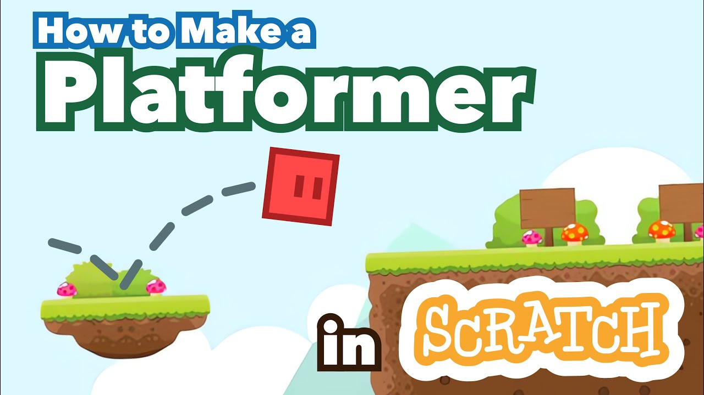
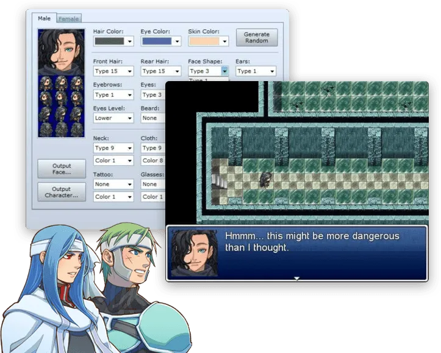

Breu joc de plataformes amb deu nivells diferents que vaig programar al final de 1er de l'ESO per experimentar amb la programació de sistemes com les colissions i l'acceleració d'una entitat.
Vaig programar-lo seguint aquest ordre:


Joc de rol el desenvolupament del qual vaig abandonar per manca d'imaginació.
El meu objectiu era entendre el funcionament intern dels jocs dacció per torns (com ara els primers Final Fantasy).

Algoritmes escrits en pseudocodi que simulen jocs d'atzar reals fent servir la generació aleatòria de xifres.
Els vaig programar per avorriment ja que les classes de programació de primer de batxillerat s'em feien eternes.
Alguns exemples són: